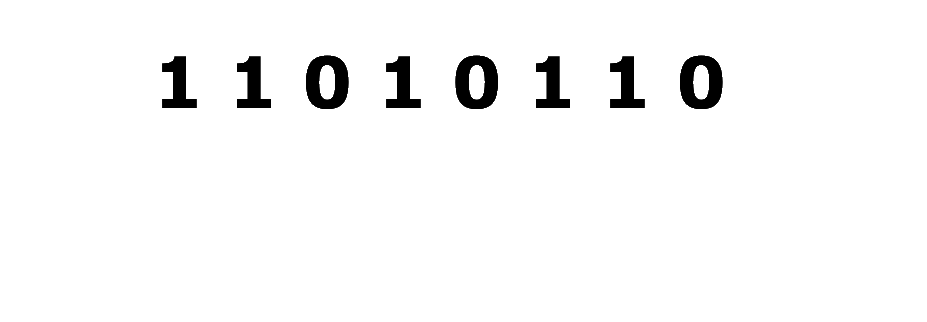

Module 03: Number Representation
Integers Representation
Numbers can be expressed as a sum of products, where each term consists of a digit multiplied by a power of a base. In decimal (base 10), digits range from 0 to 9. This system is most common because humans typically count using ten fingers.
219 = 2 · 102 + 1 · 101 + 9 · 100 = 200 + 10 + 9
However, computers use a different system, binary (base 2), because they operate with only two symbols: 0 and 1. Each binary digit (also called a bit) represents a power of 2. We will sometimes specify the base of a number with a subscript; so, 110112 is in base 2 but 1101110 is in base 10.
110112 = 1 · 24 + 1 · 23 + 0 · 22 + 1 · 21 + 1 · 20 = 2710
In general, a number written in base-x uses x different digits. For example, hexadecimal (base 16) includes digits from 0 to 9 and letters A to F to represent values 10 to 15. So 0x3CF is the hexadecimal representation of 975 in decimal (note how we use 0x to represent an hexadecimal number).
3CF16 = 3 · 162 + C · 161 + F · 160 = 3 · 162 + 12 · 161 + 15 · 160 = 97510
Hexadecimal numbers are primarily used to represent binary numbers in a more human-readable format. For this reason, direct conversion between hexadecimal and binary is the standard practice, with other bases being converted to binary first. The conversion process is straightforward: group the binary bits into four-digit sets, with each set corresponding to a single hexadecimal digit. If the total number of bits is not a multiple of four, leading zeros are added to the binary number. The conversion mapping is as follows:
| 0000 - 0 | 0100 - 4 | 1000 - 8 | 1100 - C |
| 0001 - 1 | 0101 - 5 | 1001 - 9 | 1101 - D |
| 0010 - 2 | 0110 - 6 | 1010 - A | 1110 - E |
| 0011 - 3 | 0111 - 7 | 1011 - B | 1111 - F |
For example, the hexadecimal value 0xC3F translates to 1100 0011 1111 in binary, while the binary number 11011 corresponds to 0x1B< in hexadecimal.
An n-bit binary number bn-1bn-2...b2b1b0 is represented by the summation bn-1 · 2n-1 + bn-2 · 2n-2 + ... + b2 · 22 + b1 · 21 + b0 · 20
To convert a binary number to decimal, multiply each bit by its corresponding power of 2 and add the results.
110112 = 1 · 24 + 1 · 23 + 0 · 22 + 1 · 21 + 1 · 20 = 2710
To convert decimal to binary, find the largest power of 2 less than or equal to the number, subtract it, and repeat until the sum of powers equals the original number.
2710 = 16 + 11 = 16 + 8 + 3 = 16 + 8 + 2 + 1 = 1 · 2^4 + 1 · 23 + 0 · 22 + 1 · 21 + 1 · 20 = 110112
Adding Binary Numbers
Adding in binary is similar to decimal addition but follows simpler rules:
0 + 0 = 0
1 + 0 = 1
1 + 1 = 10 (that is, a 0 with a carry)
Carries work the same as in decimal, propagating to the next column on the left.
Adding two binary numbers follows the same process as adding two decimal numbers. We match the digits from right to left and add the two. If the answer has an extra digit, called a carry, we transfer that to the next pair of bits to the left of it and add to that. Later, when we talk about integers represented with a fixed number of bits, we'll talk more about what to do with a carry that "goes off the end."
So 0+0 is equal to 0 (not generating a carry).
And 1+0 is equal to 1 (not generating a carry).
But 1+1 is equal to 10, and since it needs two digits to be represented, it generates a carry.
| 1 | 1 | 1 | 1 | |||||
| 1 | 0 | 0 | 0 | 1 | 1 | 0 | 1 | |
| + | 0 | 1 | 0 | 0 | 0 | 1 | 1 | 1 |
| 1 | 1 | 0 | 1 | 0 | 1 | 0 | 0 |
Signed and Unsigned Integers
So far, we've only discussed unsigned numbers, non-negative integers. However, to represent both positive and negative integers, we use signed number representations. In a computer using binary to represent numbers, we cannot use the '+' or '−' symbols, so different encoding schemes are used. In this section we will describe two: sign magnitude and two's complement.
Sign Magnitude
In this method, the leftmost bit indicates the sign, with 0 representing a positive number and 1 representing a negative number. The remaining bits represent the absolute value in binary.
For example, 21 in decimal is 10101 in binary. So using sign magnitude, we have
+21 = 010101
-21 = 110101
Two's Complement
The two's complement of a binary number is obtained by inverting all the bits and then adding 1 to the result. For example, the two's complement of 11100010 is 00011101 + 1, which equals 00011110. This operation is used to represent negative numbers in binary. In this system, all numbers beginning with a 0 represent positive values (or zero), and to represent a negative number, we take the two's complement of its positive counterpart.
For example, using 6 bits, the number +21 would be represented by 010101, and -21 would be represented by its two's complement: 101010+1 = 101011.
The two's complement can be thought of as multiplying a number by -1 or changing its sign.
One advantage of this system is that subtraction can be performed using addition. Instead of directly calculating x - y, we can add x and the two's complement of y (which is -y). Any carry beyond the fixed bit width is ignored.
x - y = x + (-y)
For example, considering 6 bits, let x = 011011 (27 in decimal) and y = 001110 (14 in decimal). The subtraction x-y is 001101 (13 in decimal). That result can also be obtained by adding x to the two's complement of y, 110001 + 1 = 110010 (-14 in decimal):
x - y = 011011 - 001110 = 011011 + 110010 = 001101
Here, 011011 + 110010 actually produces 1001101, but since we are restricted to 6 bits only, we discard the leftmost 1, making sure the answer has 6 bits, and 001101 represents +13 (since it has the leftmost bit 0).
For example, 21 in decimal is 10101 in binary. So using two's complement, we have
+21 = 010101
-21 = 101011
Why do we add 1?
In this new scheme, zero has only one representation, a bit with only 0s. When we flip and add 1 to 0, we obtain zero as a result. For example, with 6 bits, 0 is 000000 and its two's complement is 111111 + 1 = 000000. As before, any extra carry is ignored when adding two numbers in this representation.
If we don't add 1, zero would have two representations. In 6 bits, +0 would be 000000, while -0 would be 111111. Having two distinct representations of zero would cause inconsistencies and errors in computation. Adding 1 prevents this issue.
Why don't we subtract 1 and flip?
As explained, the two's complement operation is used to change a number's sign. To represent -14 in 6 bits, we apply the two's complement to 14. Flipping 001110 gives 110001, and adding 1 gives 110010, which represents -14. To reverse this, we can apply the same operation to 110010: flipping gives 001101, and adding 1 gives 001110, which is +14.
The two's complement is therefore a symmetric operation. For instance, the two's complement of 011011 is 100101 (100100 + 1 = 100101). Reversing this can be done either by subtracting 1 and flipping (100101 - 1 = 100100 → 011011) or by flipping and adding 1 (100101 → 011010 + 1 = 011011).
Today, all computers use two’s complement to represent negative numbers and to perform subtraction using only addition. This allows hardware to be simpler, since only an adder circuit is required. This is how we will always represent signed integers in this course as well.

Real Numbers Representation
To represent real numbers (numbers with fractional parts), we need to represent both the integer and fractional parts in binary. For the integer part (the left of the "binary point"), we label the powers of 2 exactly as we did above, counting up from 20. For the fractional part (the right of the "binary point"), we count down from 20: 2-1, 2-2, 2-3, and so on. For example:
1011.1001 = 1 · 23 + 0 · 22 + 1 · 21 + 1 · 20 + 1 · 2-1 + 0 · 2-2 + 0 · 2-3 + 1 · 2-4 =
23 + 21 + 20 + 2-1 + 2-4 = 8 + 2 + 1 + 0.5 + 0.0625 = 11.5625
In order to convert a decimal real number to binary, we divide the number into two. We use one scheme to convert the integer part of the number and another one to convert the fractional part. For example, the number 13.90625 has 13 as the integer part and 90625 as the fractional part.
For the integer part, we divide the number by 2 until reaching 0, and at each step we annotate the remainder of the division. After reaching 0, we use the list of remainders backwards to describe the integer part (you can also use this first part of the process on integers).
| base 10 | next base 10: divide by 2 | base 2: modulo by 2 | |
| 13 | 13 / 2 = 6 | 13 % 2 = 1 | 1 |
| 6 | 6 / 2 = 3 | 6 % 2 = 0 | 0 |
| 3 | 3 / 2 = 1 | 3 % 2 = 1 | 1 |
| 1 | 1 / 2 = 1 | 1 % 2 = 1 | 1 |
1310 = 11012
For the fractional part, we now multiply the number by 2 until reaching 0, and at each step we remove and annotate the integer part of the result.
| base 10 | multiply by 2 | next base 10: fractional part | base 2: integer part | |
| 0.90625 | 1.8125 | 0.8125 | 1 | 1 |
| 0.8125 | 1.625 | 0.625 | 1 | 1 |
| 0.625 | 1.25 | 0.25 | 1 | 1 |
| 0.25 | 0.5 | 0.5 | 0 | 0 |
| 0.5 | 1 | 0 | 1 | 1 |
0.9062510 = 0.111012
Therefore, 13.90625 is equal to 1101.11101 in binary. While integer conversions always terminate, some decimal values (like 0.1) cannot be represented exactly in binary, requiring infinite bits. These are approximated in digital systems.
Scientific Notation
Computers represent real numbers using scientific notation, a format that makes it possible to efficiently store and manipulate numbers with both large and small magnitudes. In scientific notation, a number is written with exactly one non-zero digit before the decimal point, multiplied by a power of the base. The exponent reflects how far the decimal point is moved. Moving it to the left results in a positive exponent, while moving it to the right results in a negative exponent.
4282.19 = 4.28219 · 1000 = 4.28219 · 103
0.00243 = 2.43 · 0.0001 = 2.43 · 10-3
While decimal scientific notation uses powers of 10, binary scientific notation uses powers of 2, and always begins with a single 1 before the binary point.
011011.100 = 1.1011100 · 24
To store a real number, the computer converts it to binary scientific notation and encodes three components:
- Exponent: the exponent of the power of two, using a signed integer (00000100 in the example above using 8-bits)
- Mantissa: the number after the decimal point (10111000 in the example above using 8-bits)
- Sign: the number sign, by using sign magnitude (0, since the number is positive)
The number of bits allocated to the exponent and the mantissa directly affects the precision (how accurately the number can be represented) and the limits (how large or small the number can be) in a given system.
Modular Arithmetic
For a given integer m > 0, we can classify all integers according to their remainder after division by m. We write r = x mod m to denote the representative of the equivalence class of x, where 0 ≤ r < m. This means that when we divide x by m, the remainder is r. For example, 27 mod 4 = 3, because 27 divided by 4 is equal to 6, with 3 as a remainder, or 27 = 6*4+ 3.
If two integers x and y leave the same remainder when divided by m, then they belong to the same equivalence class modulo m. We say that x and y are congruent modulo m, and write: x ≡ y mod m. So x mod m = y mod m means the same as x ≡ y mod m (note the difference between the symbols used, = and ≡). For example, 55 ≡ 27 mod 4, because 55 mod 4 = 27 mod 4 = 3.
Furthermore, if x and y are congruent modulo m (x ≡ y mod m), then we can say that x = y + qm, for some integer q. For example, since 55 ≡ 27 mod 4, then 55 = 27 + 4q, for q = 7.
Notice that based on our definition of divisibility, when a divides b, there is no remainder when we divide b by a. Using the notation a|b, which reads as a divides b, we have: (a > 0 ⋀ a|b) → b ≡ 0 mod a.
Fundamental Theorem of Modular Arithmetic
Let a ≡ c mod m and b ≡ d mod m, then
- ab ≡ cd mod m
- a+b ≡ c+d mod m
This means that it does not matter whether you carry out all the operations first and then take the remainder modulo m, or take the remainder modulo m after each step; the result will be the same.
Example:
((10 mod 7) + (15 mod 7)) · (23 mod 7) ≡ ((10+15) · 23) mod 7
((10+15) · 23) mod 7 =
575 mod 7 =
1
(((10 mod 7) + (15 mod 7)) · (23 mod 7)) mod 7 =
((3 + (15 mod 7)) · (23 mod 7)) mod 7 =
((3 + 1) · (23 mod 7)) mod 7 =
((3 + 1) · 2) mod 7 =
(4 · 2) mod 7 =
8 mod 7 =
1
Read More
Epp, Susanna. Discrete Mathematics with Applications.
5th edition: 2.5
4th edition: 2.5
3rd edition: 1.5